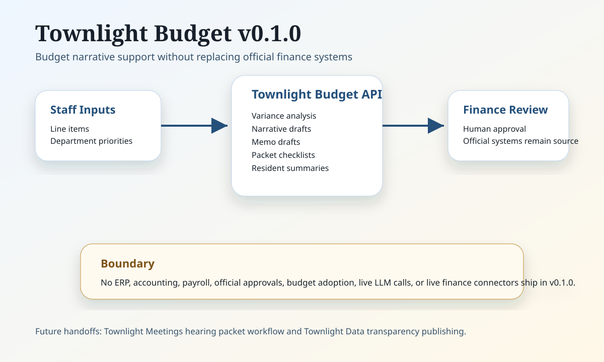

Windows 1.9.3.2 current release
Townlight for Windows 1.9.3.2 is the current signed public beta. Release and downloads · Acceptance and limits
For an existing city, make and verify a backup, close Townlight, run the signed Windows 1.9.3.2 MSI, then reopen Townlight under the same Windows account and existing profile. Direct upgrade is tested from 1.9.3.1; earlier paths have separate prior evidence.
Townlight / Townlight Budget
v0.2.0 packaged with Windows beta 1.9.3.2
Budget narrative support without replacing the ERP.
Townlight Budget v0.2.0 is packaged with Windows beta 1.9.3.2. It helps municipal finance teams prepare line-item variance notes, department narratives, memos, hearing packet checklists, resident summaries, optional GFOA presentation checklist reviews, and optional database-backed workpaper records. The standalone public page still serves workpapers at the existing path.
Available Today
Deterministic budget drafting helpers, optional workpaper persistence with CIVICBUDGET_WORKPAPER_DB_URL, bearer-token retrieval protection with CIVICBUDGET_AUTH_TOKEN_ROLES, FastAPI runtime, tests, release gate, and browser QA evidence. The standalone public page still serves workpapers at the existing path.
Human Review
Finance staff approve every number, narrative, public summary, and packet item before use.
Boundary
Windows suite integration supports saved finance review, council adoption, and reviewed resident publication; accounting, payroll, and ERP remain external. Live LLM calls and live finance connectors remain unavailable.
Recovery evidence: read the release-recovery status.
Architecture

Technical Facts
Version: 0.2.0. Dependency: packaged Windows beta 1.9.3.2 townlight-core==1.3.0.dev2. Repo: townlight/budget.